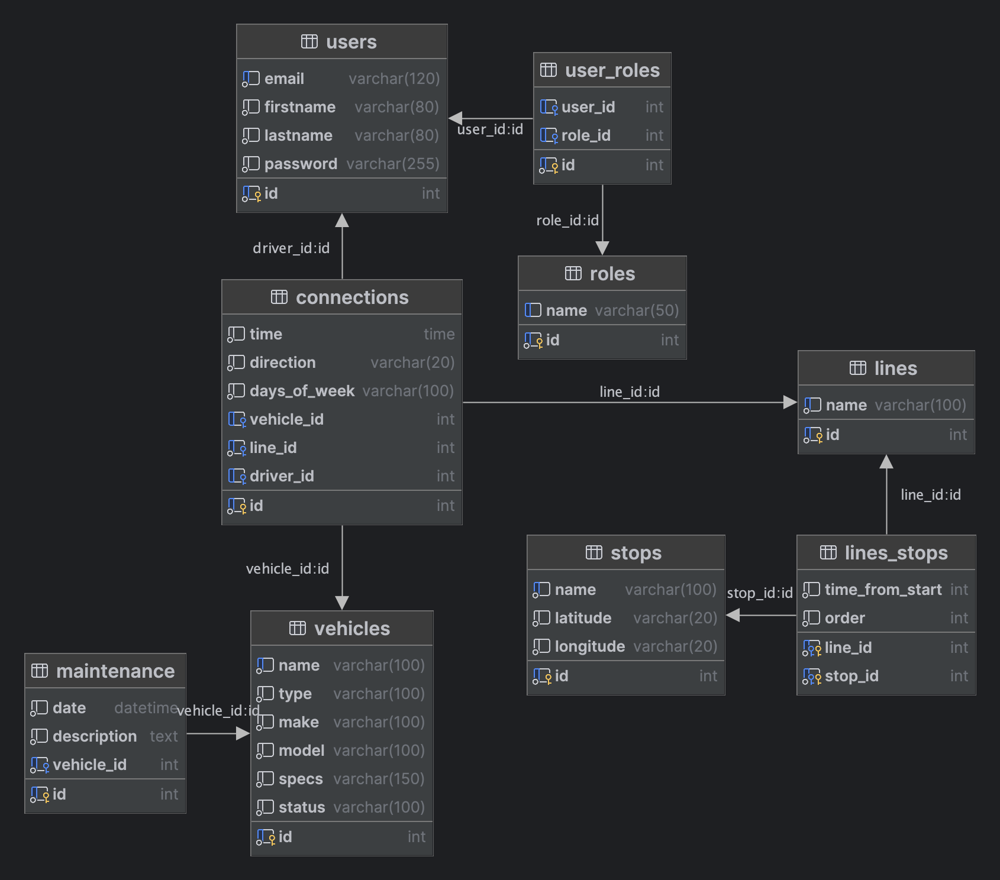

Dopravní podnik
- Autoři
- Matyáš Strelec
xstrel03@stud.fit.vutbr.cz -
Implementace API, domovská stránka, setup, přihlašování, registrace, administrace, management, dispatching, nasazení aplikace, video
- Maxmilián Nový
xnovym00@stud.fit.vutbr.cz -
Návrh (ER) a implementace modelů, doplnění API, přístupová práva, implementace spojení a maintenance
- Ondřej Seidl
xseidl06@stud.fit.vutbr.cz -
Dokumentace, testování, doplnění API, testovací data
- URL aplikace
- https://iis.mstrlc.eu
Uživatelé systému pro testování
| Login | Heslo | Role |
|---|
| admin@transport.com | admin | Administrátor |
| manager@transport.com | manager | Správce |
| technician@transport.com | technician | Technik |
| dispatcher@transport.com | dispatcher | Dispečer |
| driver@transport.com | driver | Řidič |
| user@transport.com | user | Uživatel/Zákazník |
Video
Odkaz
Implementace
Python, Flask, HTML, Bootstrap
/transport
-
transport/templates - šablony pro HTML stránky
- transport/views - implementace views
- transport/views/api - implementace API:
- authentication.py - implementace přihlašování a odhlašování, registrace
- administration.py - přidání, odebrání a editace uživatelů
- management.py - přidání, odebrání a editace spojení, linek, vozidel, zastávek, údržby
- authentication.py - view pro přihlašování a odhlašování, registrace
- administration.py - view pro administraci uživatelů
- management.py - view pro management spojení, linek, vozidel, zastávek, údržby
- home.py - view pro domovskou stránku
-
app.py - konfigurace aplikace a blueprintů
-
models.py - implementace modelů
Databáze

Instalace
Softwarové požadavky
Doporučené je používat Python 3. Flask ale podporuje Python 3.5 a novější, Python 2.7, and PyPy.
Databáze
Je třeba mít nainstalovaný MySQL server. Dále vytvořenou databázi s názvem Transport
V app.py lze nastavit při prvním spuštění app.config["SAMPLE_DATA"] = True pro vložení testovacích dat
Instalace
- Zkopírujte .env.example do .myenv
- V .myenv nahraďte obsah
DATABASE_URI vaším připojením k databázi
DATABASE_URI=mysql+pymysql://root:@localhost/transport
- Spusťte python virtuální prostředí
- Vyexportujte proměnné prostředí
- Aktivujte virtuální prostředí
- Nainstalujte závislosti
- Spusťte aplikaci
cp .env.example .myenv
DATABASE_URI=mysql+pymysql://root:@localhost/transport
virtualenv venv
set -a
. .myenv
set +a
source venv/bin/activate
pip install -r requirements.txt
flask run --host=0.0.0.0
Známé problémy
Dispatcher může upravovat čas u spojení (měla by to být práce správce).